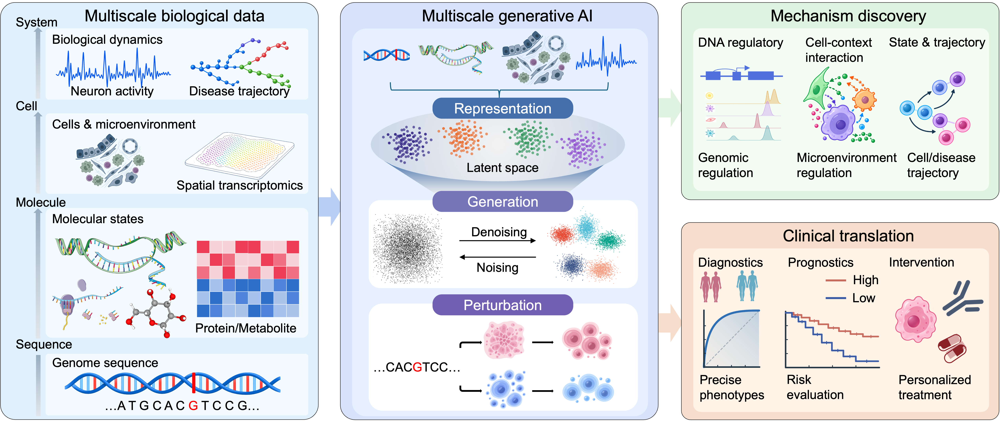

Multiscale generative AI for life sciences
Zhang Lab is a computational biology group in the Department of Biomedical Engineering at SUSTech. We build generative AI models spanning DNA sequence, molecular, cellular, and systems scales. We build AI tools to connect genomic sequence, cellular microenvironment and systematical dynamics, to advance mechanistic discovery and clinical translation for life science.
We are recruiting! See open positions

Research directions
Regulatory genomics & sequence-to-function AI
We build sequence-to-function models that decipher genomic regulation and reveal the causal relationships between sequence variation and gene regulation, providing a computational foundation for interpreting disease risk loci and enabling precision diagnostics.
Spatial & multimodal omics AI
We develop generative representation-learning methods that integrate spatial transcriptomics, proteomics, and metabolomics to characterize cell-microenvironmental interaction and to enable modeling of cell–cell communication and tissue microenvironments.
Dynamic phenotypes & neural dynamics AI
We build tools that model disease/state trajectory and characterize the neural population dynamics to address dynamic biological processes for neural population and disease progression.